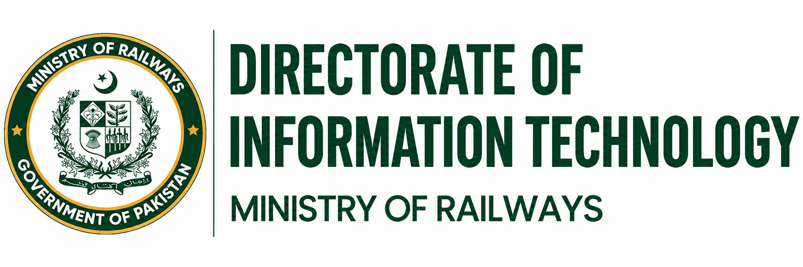

Operational
Efficiency
Support railway operations through connected digital processes.

Enabling a smarter, connected and technology-driven Pakistan Railways.
MESSAGE FROM THE DIRECTOR
Our vision is to make technology a practical force for progress across Pakistan Railways.
Through the RAIN Digital Manifesto, we aim to connect our people, processes and information within a more responsive railway ecosystem. From train and asset tracking to digital control offices, surveillance and enterprise systems, our focus is on solutions that serve real operational needs.
Digital transformation is a collective effort. By strengthening collaboration, transparency and the skills of our teams, we can improve the way we work and the services we provide to the people of Pakistan.
Together, we can build a smarter, more connected Pakistan Railways.
Support railway operations through connected digital processes.
Make information more accessible to support accountability.
Bring railway data and workflows into a shared digital environment.
Place people and service accessibility at the heart of progress.
15 initiatives. One connected objective.
Explore the projects driving railway digitization.
Tracking at both ends of a train to support visibility of train movement.
Tracking and monitoring railway rolling stock assets.
Bringing existing weigh bridges into a connected digital workflow.
Provision of new HSWIM as part of the RAIN initiative portfolio.
Digitization of railway control offices.
Digital systems for divisional railway control.
Public WiFi provision at 100 Mbps for a one-year period.
Smart surveillance systems covering Karachi, Lahore, Multan and Rohri.
Sensors for monitoring fuel consumption in real time.
Small-scale smart surveillance across 14 stations.
Pakistan Railways Operations Management & Integrated Services Ecosystem. The ERP initiative within the RAIN Digital Manifesto.
Annual salary provision for a 20-person RAIN team.
A rail scanning system using optical character recognition.
Surveillance systems focused on trains.
Digital attendance management for railway workshops.
Showing all 15 initiatives · Select an initiative to explore its scope.
OUR TECHNOLOGY FOCUS
A connected digital railway brings together applications, infrastructure, data and people.
Digital tools that support railway workflows and services.
Information that helps people understand operations.
The systems and connectivity behind digital services.
Connections between railway platforms and processes.
A focus on protecting information and digital systems.
Flexible foundations for connected digital platforms.
Directorate of Information Technology
IJP Road, Sector I-11/1, Islamabad
Have a question or an idea? Get in touch with the Directorate of IT.